User Guide
Welcome to the HTM151: Nuvolo for Managers Labs! This guide is designed to help you navigate through the various labs included in this course. Each lab focuses on a specific aspect of using Nuvolo, providing hands-on experience and practical knowledge.
Getting Started
- Access Nuvolo Development Environment: Use the DEV environment for all labs. Login via https://vasubprod1.servicenowservices.com/ with your VA.gov account.
- Navigate This Guide: Use the dropdown menu above to select a specific lab. All sections include step-by-step instructions, screenshots, and interactive elements like input fields for answers.
- Theme Toggle: Switch between light and dark mode using the toggle in the top right for better readability.
Tips for Success
- Explore Freely: Don't hesitate to click around Nuvolo—use the "History" tab to backtrack if needed. Avoid using your browser's back button, as it may not work well with Nuvolo.
- Document Your Work: Many labs include input fields for recording answers (e.g., work order numbers). Use these to track your progress and share with instructors.
- Troubleshooting: If you encounter issues, you're not alone! Ask your instructor(s) for help and you'll be helping out your peers too!
- Practice Hypotheticals: Labs encourage creating hypothetical work orders and assets to build confidence without real-world consequences.
If you have questions, reach out to your instructor or refer to the course materials. Happy learning and mastering Nuvolo!
Happy learning!
Lab 1: HTM User Management
HTM User / Manager Setup
The Jonathan M Wainwright Memorial VA Medical Center at Walla Walla, WA has just gone on a mass hiring spree! The HTM department has benefited by onboarding many new employees across all job series and titles. These new HTM employees need to be granted access in Nuvolo to include the onboarding tasks detailed below.
- All HTM employees must be added to the HTM WWW Biomedical group. Select HTM employees in supervisory roles must be additionally added to the HTM WWW Management group.
- All HTM employees must be granted HTM User and/or HTM Manager access, as applicable.
- All HTM Employees must have an internal rate configured.
Instructions:
As one of the HTM department’s Administrative Officers, you will find your employee on the spreadsheet in the chat and configure them in Nuvolo to grant them access as HTM Users and/or HTM Managers, where applicable.
Part 1: Groups
- Select All in the Filter Navigator. Type Group in the search box and select Groups.

- (As Applicable) Click the Show Column Search Row button (magnifying glass).

- In the Name column search box, type HTM WWW Biomedical and press Enter.
- Click the hyperlinked Group name to open the record.
- (As Applicable) Scroll to the bottom of the Group form and click Load Related Lists.
- Click on the Group Members tab. Click the Edit button to add employees to the Group.

- In the Edit Members screen, type the HTM employee’s first and last name in the Collection table’s search box. Ensure the employee’s User ID (in parenthesis) matches the value on the spreadsheet.

- Select the correct employee in the search results and click the Add button (>) to add them to the Group Members List.
- Click the Save button to save and exit the Edit Members screen. Click the Update button to exit the Group record.
- If the HTM employee is in a supervisory position, as indicated on the spreadsheet, repeat steps 2 through 7 using HTM WWW Management as the Group.

Part 2: User Attributes
- Select All in the Filter Navigator. Type User in the search box and select Nuvolo User Attributes.

- Below the Nuvolo User Attributes list title, select the All link to remove default filters.
- (As Applicable) Click the Show Column Search Row button (magnifying glass).
- In the Name column search box, type the employee’s first and last name and press Enter.

- Ensure the employee’s User ID (in parenthesis) matches the value on the spreadsheet and click the hyperlinked employee name to open the record.
- Search for and select Walla Walla, WA (WWW) for the Facility and Duty Station.

- Check the HTM User checkbox to grant employees access to Nuvolo. For supervisory employees, check the HTM Manager checkbox as well.

- Select the HTM Primary Role indicated on the spreadsheet.
- Click the Update to apply changes and close the record.
Part 3: Internal Rates
- Select All in the Filter Navigator. Type Rates in the search box and select Internal Employee Rates.

- Click the New button to generate an Internal Rates record.
- Click the Search button (magnifying glass) for the Employee field.

- (As Applicable) Click the Show Column Search Row button (magnifying glass).
- Type the employee’s first and last name in their respective column search boxes and press enter.
- Ensure the employee’s User ID matches the value on the spreadsheet and click the hyperlinked employee’s first name.
- Search for and select Walla Walla, WA (WWW) for the Facility field.
- Select the Submit button to initially save the Internal Rates record.
- (As Applicable) Click the Show Column Search Row button (magnifying glass).
- Type the employee’s first and last name in the Employee column search box and press Enter. Click the hyperlinked Yearly value ($0.00) to re-open the Internal Rates record.
- Using the spreadsheet, type or copy the corresponding Yearly and Hourly values into the Yearly and Labor Rate fields. Type or copy the Hourly value into the Travel Rate.

- Optionally, type or copy the corresponding Pay Plan, Classification Series, Grade, and Step values.
- Click the Update button to save changes and exit the Internal Rates record.
Optional: Technician Schedules
The Medical Center Director for the Jonathan M Wainwright Memorial VA Medical Center has implemented new operating hours for the facility. The facility will now to be open and will see Veterans Monday through Friday, 0700 to 1730, effective immediately. With so many HTM employees in the department, the Chief Biomedical Engineer has decided that employees will be divided into two shifts to allow coverage for the extended operating hours while minimizing Premium Pay costs.
- Shift A: Monday through Thursday, 0700 to 1730
- Shift B: Tuesday through Friday, 0700 to 1730
Nuvolo has already been configured to allow the automatic assignment of Clinical Work Orders to employees following Nuvolo’s Assignment Logic. To reflect the department’s transition to shifts, Clinical Technician Schedules will be entered in Nuvolo so the Nuvolo Assignment Logic will continue to assign Clinical Work Orders to only the employees present during the week, particularly on Mondays and Fridays.
INSTRUCTIONS: As one of the HTM department’s Administrative Officers, generate a Clinical Technician Schedule for your employee on the attached spreadsheet and configure their Schedule Entry to reflect the shift to which they are assigned.
Optional Part 1: Schedules
- Select All in the Filter Navigator. Type Schedule in the search box and select Technician Schedule.

- Click the New button to generate a Clinical Technician Schedules record.
- In the Technician field, click the Search button (magnifying glass).

- (As Applicable) Click the Show Column Search Row button (magnifying glass).
- Type the employee’s first and last name in the search box and press Enter.
- Ensure the employee’s User ID matches the value on the spreadsheet and click the hyperlinked employee’s first name.
- Copy the selected Technician field value and paste it into the Name field.
- Select the Submit button to initially save the Clinical Technician Schedules record.
- (As Applicable) Click the Show Column Search Row button (magnifying glass).
- Type the employee’s first and last name in the Employee column search box and press Enter. Click the hyperlinked Name to re-open the record.

- (As Applicable) Scroll to the bottom of the Group form and click Load Related Lists.
- Click the New button in the Schedule Entries tab to generate a new entry record.
- In the Name field, type A-Shift or B-Shift, as applicable. Ignore the Type and Show As fields.
- In the When section, check the All Day checkbox. Change both dates to September 30th of the current calendar year.
- In the Repeats field, select Specific. Leave the Repeats Every defaulted to 1 day.
- In the Repeats On field, check the days of the week the employee will be working and leave all other days unchecked.
- Shift A: Check Mon, Tues, Wed, Thu
- Shift B: Check Tues, Wed, Thu, Fri

- Click the Submit button to save the Schedule Entry.
Lab 2: Clinical Device Verification and Work Order Assignment
Part 1: Navigation and Primary Data Fields
- In the "All" filter navigator, search for "Unverified Devices" and select it. You may need to add "Verified" as a column to see the unverified devices.
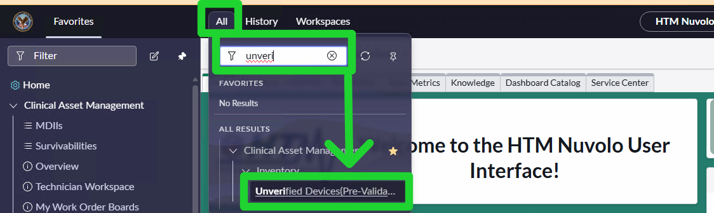
- Click on the first Unverified Device to view its details. Hint: You must select the Asset Tag to open the device!
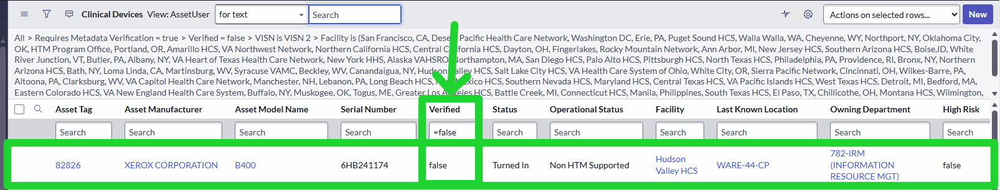
- Review the primary data fields on the device details page. Based on the information, answer the following questions:
- What is the device's serial number?
- What is the Operational Status of this device?
- Is there a Backup Available?
- Is this device a Loaner?
- What is the Warranty Expiration date?
- What is the PM Support Group?
- What was the last activity on this device?
- Is this device Cerner compatible?
- Before verifying this device, let's find out how to automatically assign groups for PM and CM Support on this device. Select the "Resources" tab.
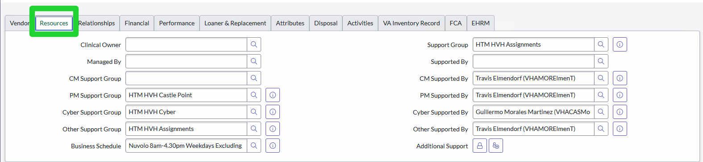
- Let's update the PM Support Group. Select the "Eyeglass" icon next to the PM Support Group field.
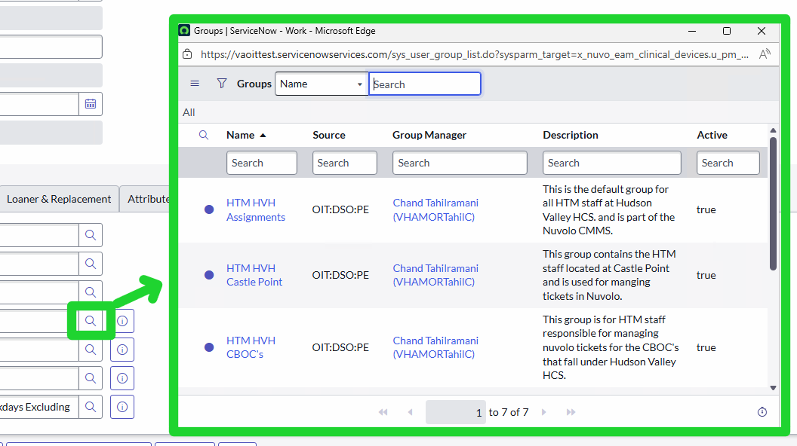
- In the pop-up window, select one of the groups to give them automatic assignment to this device.
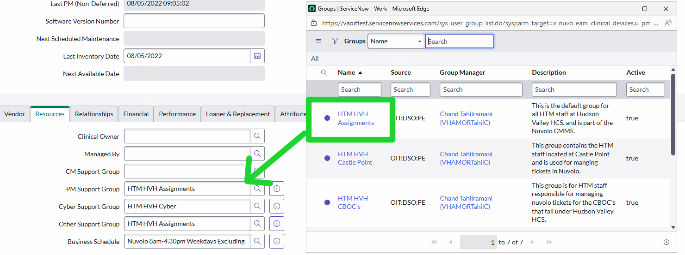
- Finally, let's verify this device. Select the "Verified" button and select Save.
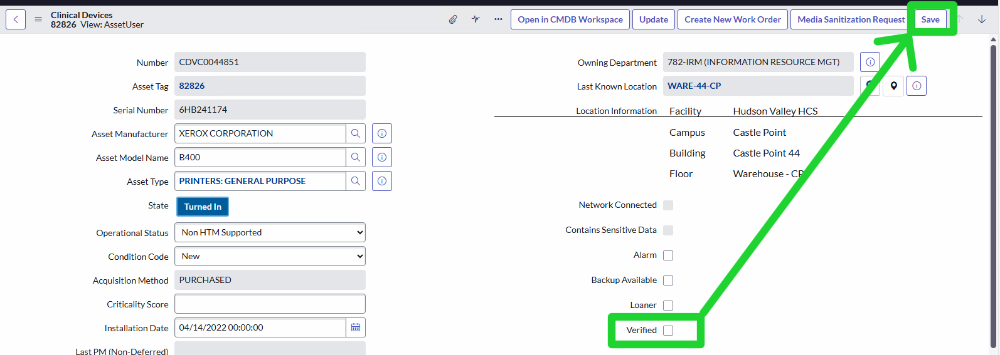
- What time does the Daily Device Feed run every day?
- Where is device data pulled from to the daily device feed?
- Where can you see the Daily Device Feed update history within a device record?
A: 2 AM EST
A: Device data is pulled from AEMS/MERS (VistA), Maximo, NMDD
A: Under the Activities tab at the bottom of the Clinical Devices record
Part 2: Work Order Assignment
We just used Automatic Assignment in the last lab, but how do we manage our groups and create new ones if we need to?
- In the "All" filter navigator, search for "Groups" and select it (Hint: It's the one under "Self Service")
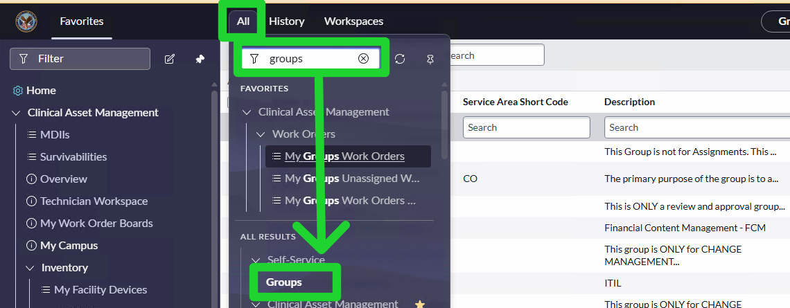
- In the list, search for "HTM" followed by the HTM Program TLA (in this example, we use ABQ. Yours will be different!) and select Enter
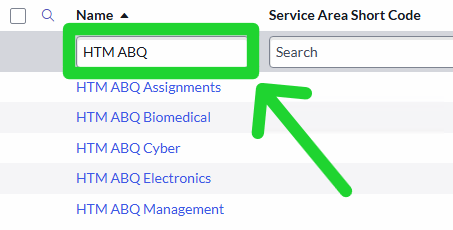
- Select one of the groups.
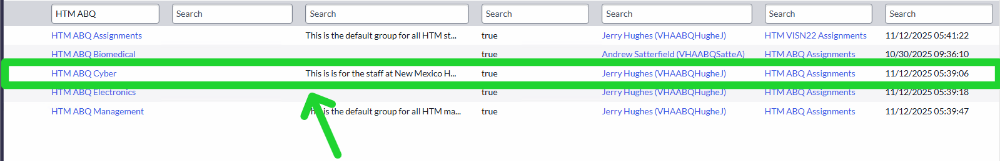
- At the bottom of the page, you can select "Load Related Lists" to view additional details like Roles, Group Members, Groups, Skills, etc.
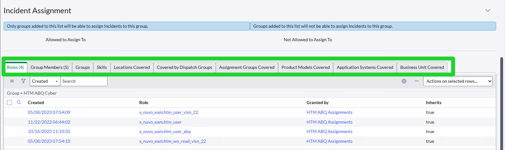
- Review the data fields and answer the following questions:
- What is the purpose/description of this group?
- How many Group Members are in this group?
- How many different Roles are assigned to this group?
- Is the group Active?
- What is the Group email?
- What is the role of the Group Manager in a Support Group?
- What function does the Default Assignee serve in a Support Group?
- Why is accurate group membership critical for automatic assignment?
- Why should you check your technician’s schedule before relying on automatic assignment?
A: Typically the HTM Manager or department chief responsible for overseeing the group’s settings and performance
A: It determines the automatically assigned technician if no specific Supported By person is listed on the device
A: Nuvolo uses Support Group membership to route CM, PM, Cyber, and Other work orders to the correct personnel
A: Because automatic assignment only works when a technician has an active schedule; otherwise, work orders default to the group instead.
Lab 3: Preventive Maintenance Definitions
A key aspect of PMs is PM definitions. This is how PMs will be auto-generated within Nuvolo. For this lab, we'll focus on creating a PM definition for "PALMSAT 2500A"
Part 1: Maintenance Definitions and Automatic Creation
- In the "All" filter navigator, search for "Maintenance Definitions" and select it.
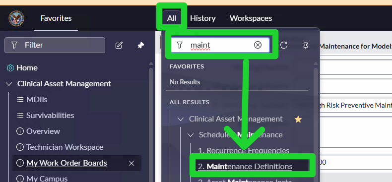
- Select "New" to create a new PM Definition.
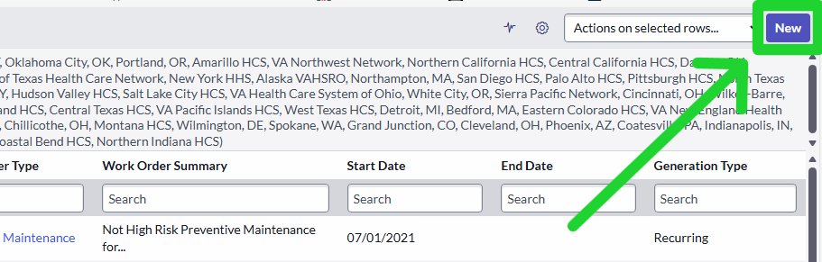
- Fill out the following fields:
- Name: Leave this blank! Nuvolo automatically generates the name based on the other fields.
- VISN: VISN 20
- Facility: Walla Walla, WA
- Model Name: ends with PALMSAT 2500A
- Status: In Use, Loaned Out, Out of Service
- Operational Status: is not NONE
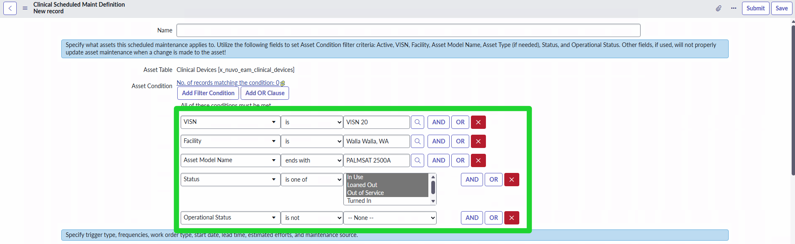
- Scroll down for the next section to fill out. Follow the screenshot below for all fields:
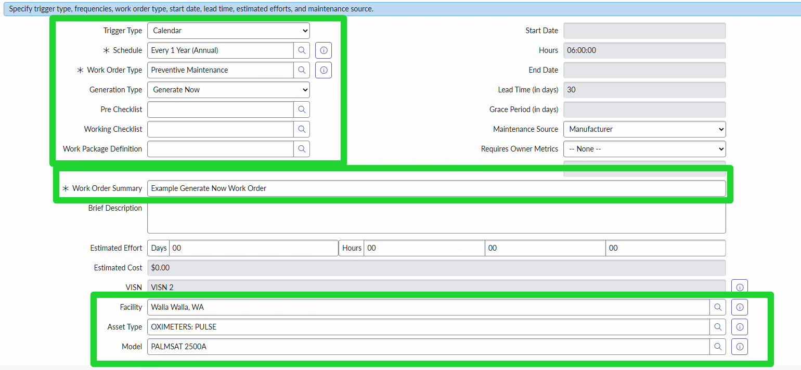
- Select "Save" or "Submit" to complete the PM Definition creation.
- Let's find your PM Definition in the list. One of the easiest ways to do so is by editing your columns and searching by "Created by"
- Select the gear icon in the top right corner of the list view
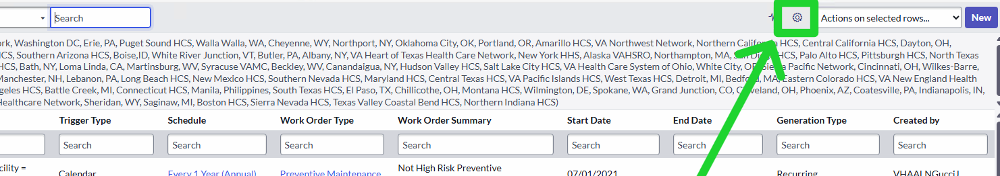
- Search for "Created by" and add it to your selected columns
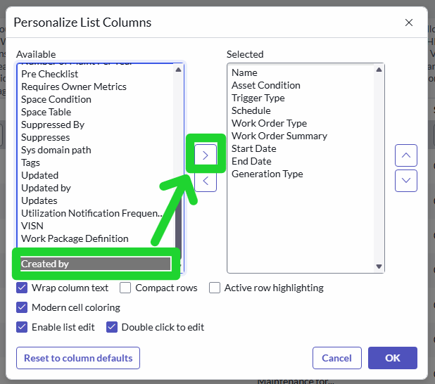
- In the column Search, type "*" and your Last Name to find your PM Definition
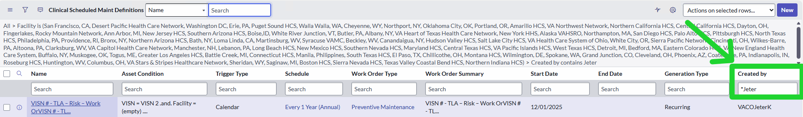
- Select the gear icon in the top right corner of the list view
- Select your newly created definition by clicking on the name
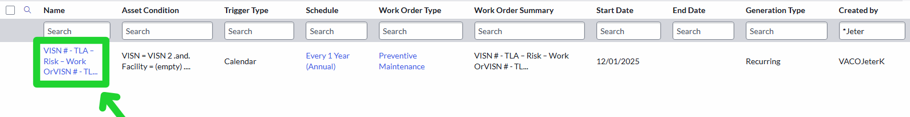
- Confirm the PM Definition is activated. If it isn't, click "Activate" in the top right corner.
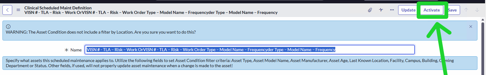
- Why won’t Clinical Scheduled Maintenances appear before clicking Activate?
- Where do you see the number of matching assets for your conditions?
- What are the two related lists you should verify after activation?
A: Can only be generated only after the definition is activated.
A: In the Asset Conditions in the link: No. of records matching the conditions
A: Maintenance Instance and Upcoming Scheduled Maintenance in Load Related List
Part 2: Generate Now (Ad Hoc Generation)
If a new asset/model has no existing definition, set Generation Type to Generate Now to create a work order
- Renavigate to the "Maintenance Definitions" main page.
- Select "New" to create a new PM Definition.
- Fill out the following fields:
- Name: Leave this blank! Nuvolo automatically generates the name based on the other fields.
- VISN: VISN 20
- Facility: Walla Walla, WA
- Model Name: ends with PALMSAT 2500A
- Status: In Use, Loaned Out, Out of Service
- Operational Status: is not NONE
- In the below section, select "Generate Now" in Generation Type. Note that Start Date is greyed out when it's selected.
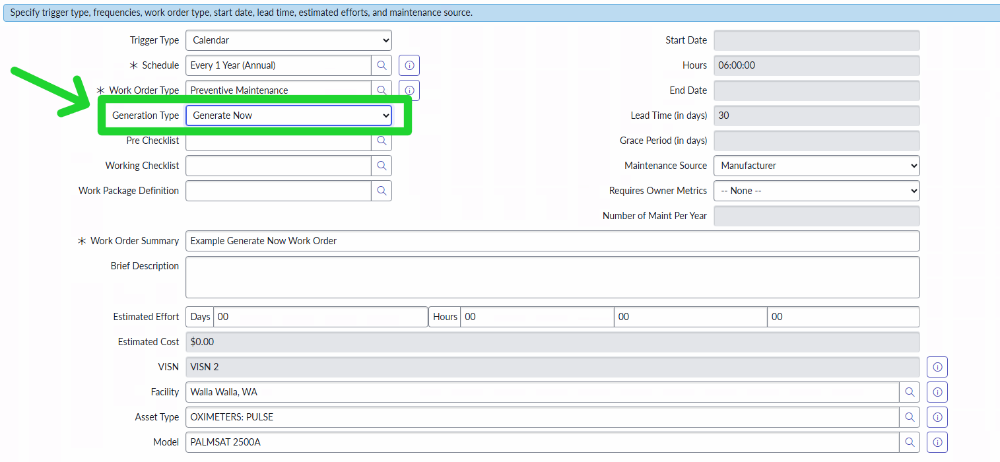
- Select "Save" or "Submit" to complete the PM Definition creation.
- Does Generate Now create PM orders immediately?
- When should you switch back to Recurring after Generate Now?
A: No – it is generated overnight.
A: After initial PM work orders are generated (so the definition resumes scheduled recurring generation)